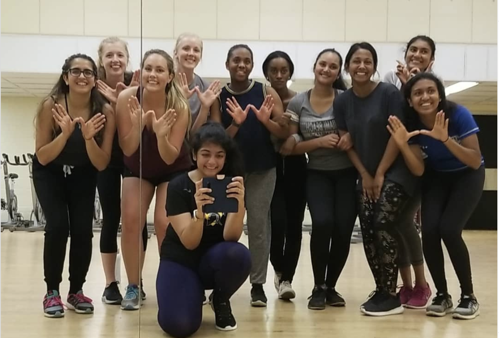

I love dancing!
During my internships, I taught students and adults dance at the
Fustion Cardio Toronto.
I also love to perform at social events with dancers from my school.
During school terms, I taught students at the University of Waterloo PAC Studio.
